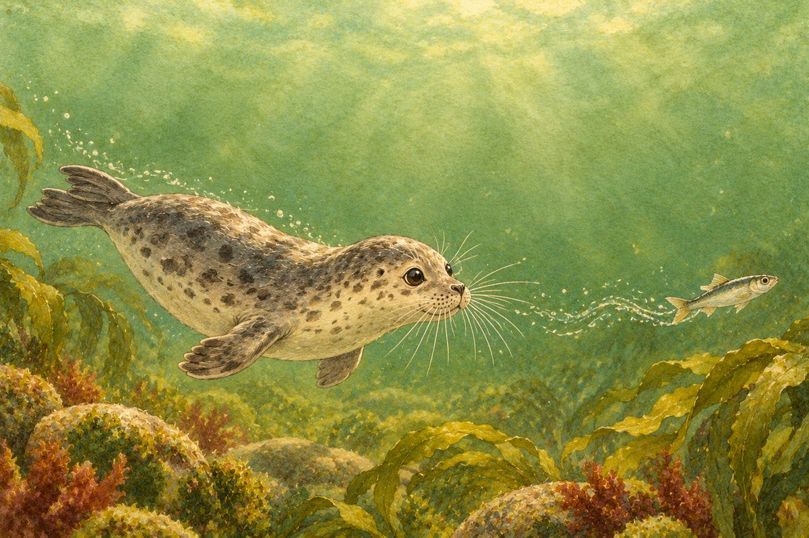
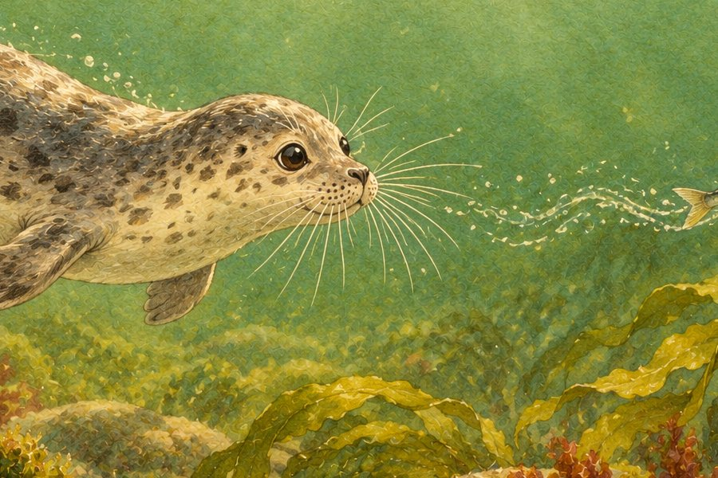
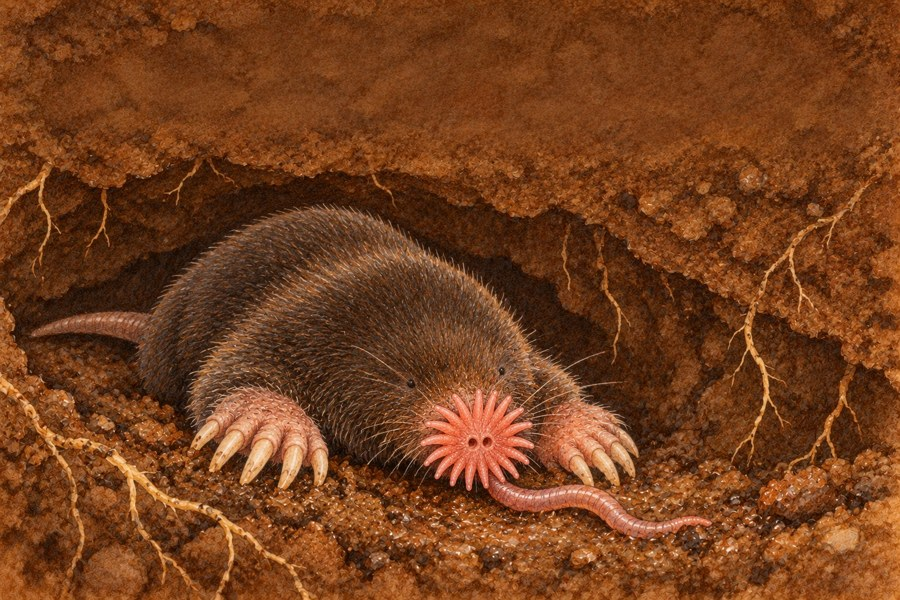
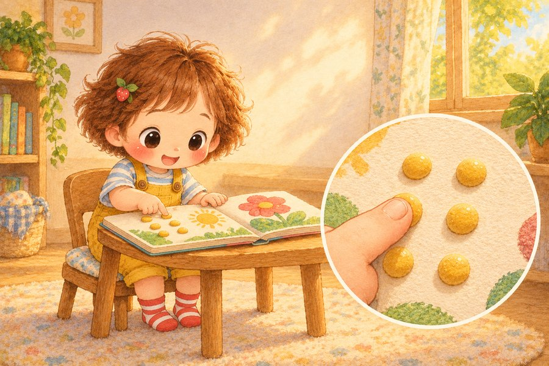

Asked by kids everywhere, and by Juni by the pond.
Why do seals have whiskers?
They aren’t for looking smart. They work like super-sensitive fingers.
Kid: “Why does Grandpa have whiskers?”
Grown-up: “…Let’s stick to seals.”

From Just Imagine! Could You Feel With Your Nose?
A seal’s whiskers

They can feel the tiny swirls a fish leaves behind in the water. Scientists covered a seal’s eyes, and it still followed the trail of a little toy submarine with its whiskers.
A star-nosed mole

It has 22 little pink “fingers” around its nose, in the shape of a star. In dark, muddy tunnels its star can touch about ten things in one second to find tiny worms.

Your best feelers
Your nose helps you breathe and smell, but it isn’t made for touching. You feel best with your fingertips. They are some of the most sensitive spots on your body. Some people even read with their fingertips, feeling tiny raised dots called braille.
Try this
Mystery touch bag. Put 4 things in a pillowcase: a sock, a spoon, a pinecone, a toy. Your child reaches in without looking and guesses each one by touch. Then swap: can a grown-up guess too?
Ask your kids (or your class)
What would you use pretend whiskers to find?
What shape would your whiskers be?
What would you ask a seal?
Stay safe: Ask a grown-up before touching things that might be hot, sharp or spiky, and never touch wild animals.
Discover more in the book
Juni asks “Could you feel with your nose?” in a Just Imagine! picture book for ages 4–8, with even more amazing facts to wonder about together.
Sources: Vanderbilt University, Catania Lab, “Star-Nosed Mole”; Smithsonian’s National Zoo, “Gray seal”; Dehnhardt et al., Science (2001), “Hydrodynamic trail-following in harbor seals (Phoca vitulina)”.
There’s more
Which animal would you ask about its senses next?